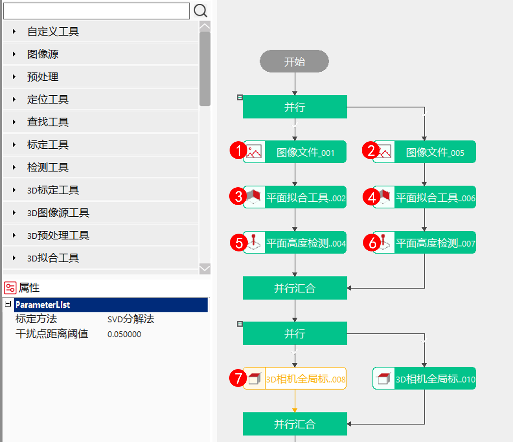
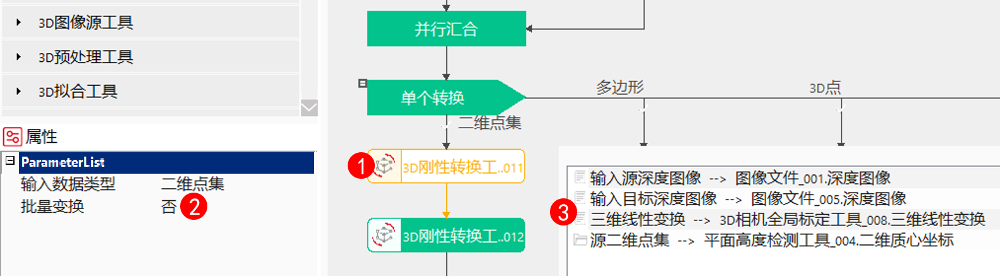
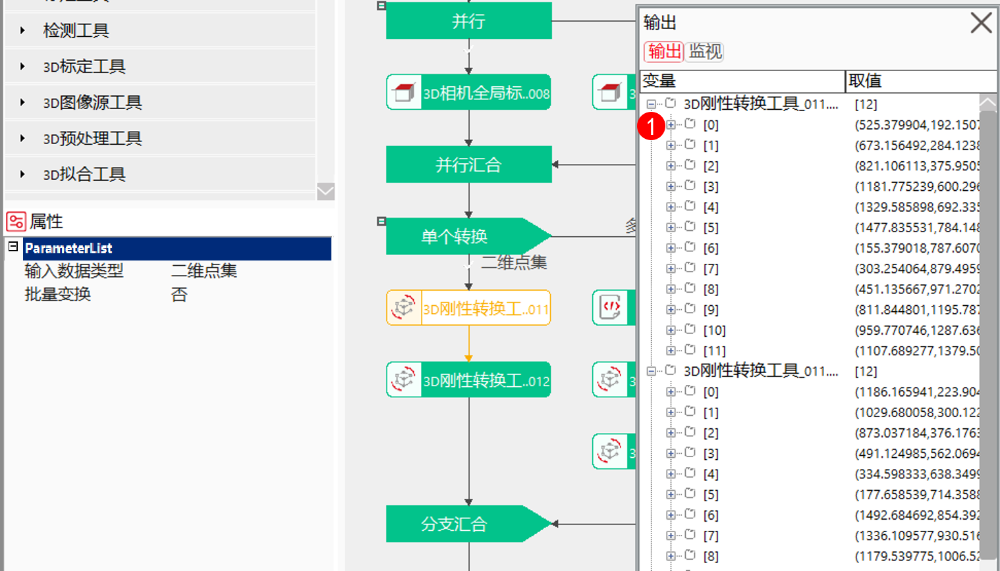

Công cụ biến đổi cứng 3D dựa trên mối quan hệ tịnh tiến-xoay được tạo bởi hiệu chuẩn camera 3D, thực hiện biến đổi cứng đối với dữ liệu 3D như ROI, mặt 3D, điểm 3D, v.v., từ đó làm cho dữ liệu sau chuyển đổi giữ vị trí nhất quán trong hình ảnh đích so với hình ảnh nguồn.
Công cụ biến đổi cứng 3D chủ yếu nhắm đến trong kỹ thuật thực tế: hai hoặc nhiều camera 3D quét cùng một sản phẩm, khi vị trí sản phẩm thay đổi, ROI hình ảnh cần điều chỉnh tương ứng, thao tác hiện tại chỉ có thể điều chỉnh vị trí kích thước từng ROI, dẫn đến lặp lại thao tác, bước phức tạp, nên muốn bổ sung một công cụ ánh xạ tọa độ ROI từ hình ảnh nguồn đến hình ảnh đích dựa trên mối quan hệ ánh xạ từ hiệu chuẩn camera và tham số hình ảnh, nâng cao tính dễ sử dụng của phần mềm.
Công cụ biến đổi cứng 3D thông qua mối quan hệ biến đổi tuyến tính 3D đầu vào để chuyển đổi dữ liệu như ROI, mặt 3D, điểm 3D trong hình ảnh nguồn sang hình ảnh đích.

Mối quan hệ biến đổi tuyến tính 3D
（1）Cách tạo mối quan hệ biến đổi tuyến tính 3D chủ yếu thông qua công cụ hiệu chuẩn toàn cục camera 3D để thu được, cách thao tác tham khảo sổ tay hướng dẫn sử dụng công cụ hiệu chuẩn toàn cục camera 3D；
（2）Cách tạo mối quan hệ biến đổi tuyến tính 3D cũng có thể tạo theo tình huống dự án thực tế；

Loại chuyển đổi
Có thể chuyển đổi bốn loại, lần lượt là：tập điểm 2D、đa giác、điểm 3D、mặt 3D, v.v.；
Chuyển đổi hàng loạt
Khi chọn “Không”, công cụ mỗi lần thực thi chỉ chuyển đổi một tập điểm 2D, đa giác, mặt 3D đơn lẻ, trong đó điểm 3D chỉ có thể là chuyển đổi hàng loạt, nên khi chọn loại chuyển đổi là：“điểm 3D” thì mặc định là chuyển đổi hàng loạt, và không hiển thị tham số thuộc tính chuyển đổi hàng loạt, tránh thao tác sai；Khi chọn “Có”, công cụ một lần thực hiện chuyển đổi nhiều tập điểm 2D, đa giác, mặt 3D, tương tự, loại đầu vào chuỗi dữ liệu tương ứng trở thành định dạng mảng của loại chuyển đổi tương ứng；
Nhiều biến đổi tuyến tính 3D
Chỉ khi “Chuyển đổi hàng loạt” được đặt là “Có” thì hộp thuộc tính mới hiển thị tham số này, khi “Nhiều biến đổi tuyến tính 3D” chọn “Có”, công cụ có thể chuyển đổi nhiều loại chuyển đổi được chọn theo các biến đổi tuyến tính 3D khác nhau, lúc này cần chú ý：kích thước mảng của loại chuyển đổi tương ứng phải nhất quán với kích thước mảng biến đổi tuyến tính 3D, nếu không sẽ chuyển đổi thất bại, chọn “Không” thì chuyển đổi hàng loạt chỉ sử dụng cùng một biến đổi tuyến tính 3D；

Không có
| Tên tham số | Giải thích tham số |
|---|---|
| Loại dữ liệu đầu vào | Loại chuyển đổi tập điểm 2D ROI、đa giác ROI、mặt 3D、điểm 3D, v.v.. |
| Chuyển đổi hàng loạt | Có：hiển thị chuỗi dữ liệu đầu vào dạng mảng；Không：hiển thị chuỗi dữ liệu không phải mảng |
| Bật biến đổi 3D khác nhau | Có：hiển thị chuỗi dữ liệu đầu vào dạng mảng；Không：hiển thị chuỗi dữ liệu không phải mảng |
| Bật tính toán song song | Có bật tính toán song song hay không, khi chọn Có, thuật toán sẽ bật chế độ tính toán song song OpenMp, có thể nâng cao tốc độ tính toán nhưng có thể xuất hiện tình huống thời gian không ổn định, khi chọn Không, thuật toán sẽ tắt tính toán song song OpenMp. |
| Tỷ lệ phần trăm số luồng | Thiết lập tỷ lệ phần trăm số luồng tính toán song song, phạm vi hiệu quả là (0, 0.75], tương ứng với phạm vi phần trăm (0%, 75%]. |
| Biến đổi tuyến tính 3D（chuỗi dữ liệu） | Tham số dùng cho mối quan hệ xoay-tịnh tiến. |
| Mảng biến đổi tuyến tính 3D（chuỗi dữ liệu） | Mảng tham số dùng cho mối quan hệ xoay-tịnh tiến. |
| Tập điểm 2D nguồn（chuỗi dữ liệu） | Dùng để lấy dữ liệu mảng ROI cần chuyển đổi, tiện cho script không hỗ trợ đồ họa ghi vào. |
| Mảng tập điểm 2D nguồn（chuỗi dữ liệu） | Dùng để lấy dữ liệu mảng ROI cần chuyển đổi, tiện cho script không hỗ trợ đồ họa ghi vào. |
| Đa giác ROI nguồn（chuỗi dữ liệu） | Dùng để lấy dữ liệu ROI cần chuyển đổi. |
| Mảng đa giác ROI nguồn（chuỗi dữ liệu） | Dùng để lấy dữ liệu mảng ROI cần chuyển đổi. |
| Tập điểm 3D nguồn（chuỗi dữ liệu） | Dùng để lấy dữ liệu mảng điểm 3D cần chuyển đổi. |
| Mặt 3D nguồn（chuỗi dữ liệu） | Dùng để lấy dữ liệu mặt 3D cần chuyển đổi. |
| Mảng mặt 3D nguồn（chuỗi dữ liệu） | Dùng để lấy dữ liệu mảng mặt 3D cần chuyển đổi. |
| Tên tham số | Giải thích tham số |
|---|---|
| Mảng tập điểm 2D nguồn | Dùng để lấy dữ liệu mảng ROI cần chuyển đổi, hoặc tiện cho script không hỗ trợ đồ họa ghi vào. |
| Mảng tập điểm 2D sau chuyển đổi | Mảng tập điểm 2D sau chuyển đổi. |
| Tập điểm 2D sau chuyển đổi | Dữ liệu đỉnh đa giác ROI sau chuyển đổi. |
| Đa giác ROI sau chuyển đổi | Dữ liệu đa giác ROI sau chuyển đổi. |
| Mảng đa giác ROI sau chuyển đổi | Dữ liệu mảng đa giác ROI sau chuyển đổi. |
| Tập điểm 3D sau chuyển đổi | Dữ liệu mảng điểm 3D sau chuyển đổi. |
| Mặt 3D sau chuyển đổi | Dữ liệu mặt 3D sau chuyển đổi. |
| Mảng mặt 3D sau chuyển đổi | Dữ liệu mảng mặt 3D sau chuyển đổi. |
| Mảng tập điểm 2D nguồn（chuỗi dữ liệu） | Dùng để lấy dữ liệu mảng ROI cần chuyển đổi, tiện cho script không hỗ trợ đồ họa ghi vào. |
| Mảng tập điểm 2D sau chuyển đổi（chuỗi dữ liệu） | Mảng tập điểm 2D sau chuyển đổi. |
| Đa giác ROI sau chuyển đổi（chuỗi dữ liệu） | Dữ liệu đa giác ROI sau chuyển đổi. |
| Mảng đa giác ROI sau chuyển đổi（chuỗi dữ liệu） | Dữ liệu mảng đa giác ROI sau chuyển đổi. |
| Tập điểm 3D sau chuyển đổi（chuỗi dữ liệu） | Dữ liệu mảng điểm 3D sau chuyển đổi. |
| Mặt 3D sau chuyển đổi（chuỗi dữ liệu） | Dữ liệu mặt 3D sau chuyển đổi. |
| Mảng mặt 3D sau chuyển đổi（chuỗi dữ liệu） | Dữ liệu mảng mặt 3D sau chuyển đổi. |
| Kết quả thực thi | Kết quả thực thi công cụ，true/false |
| Thời gian thực thi | Thời gian cần thiết để công cụ thực thi xong |
参见“\Samples\3D\深度图\3D刚体变换工具.gvp”。